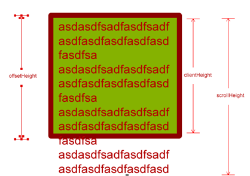

1.冒泡排序法：
var arr=[1,2,3,4,5];
var inner=0,
outter=0;
for (var i =0;i<arr.length-1;i++) {
var flag=true;
for (var j=0;j<arr.length-1-i;j++) {
if(arr[j]>arr[j+1]){
var tmp=arr[j];
arr[j]=arr[j+1];
arr[j+1]=tmp;
flag=false;
}
inner++;
};
outter++;
if (flag) {
break;
};
};
2.九九乘法表：
for (var i =1;i< 10;i++) {
for(var j=1;j<=i;j++){
document.write(i+'*'+j+'='+i*j+' ');
if (i==j) {
document.write('</br>');
};
}
};
3.Array数组对象的方法
splice（start，howmany--删除的元素个数，ele1,ele2,....）
- 删除数组并在相应位置添加新的元素,不传入新的元素则只删除不添加，对原数组有影响；
- 如果从 arrayObject 中删除了元素，则返回的是含有被删除的元素的数组。
- 不指定删除个数，默认从起始点开始全部删除
slice（start---默认0，end）
---切割数组的某部分，且包含开始不包含结束，并返回切割的部分，不会影响原数组、
---start为负数，指的是从倒数开始切割
join（sepatator）---将数组用指定分隔符连接成字符串
---默认使用,连接，可指定
---返回一个字符串
---不会改变原数组
shift（）---删除数组的第一个元素，并返回该元素
---会改变原数组
unshift（）---向数组添加一个或多个元素，并返回新的数组长度
---会改变原数组
push（）---向数组末尾添加一个或多个元素，返回新的数组长度
---会改变原数组
pop（）---删除数组的最后一个元素，并且返回该元素
---会改变原数组
---->向数组添加元素都会返回新的数组长度，删除数组的元素都会返回被删除的元素，添加删除都会改变原数组
concat（）---连接多个数组
---可以是具体的数，也可以是数组对象
---返回合并后的数组
---不会改变原数组，只是将两个数组合并，返回一个新的副本
console.log(arr.concat([0,9,7]));
console.log(arr.concat(8,8,6));
---返回被连接的数组，不会改变原数组
reverse（）---翻转数组
---直接改变原数组，不会创建新的数组
---返回翻转后的数组
sort（sortby）---对数组元素排序
- 直接在原数组基础上排序，会对原数组造成影响
- sortby规定排序顺序，必须是个函数
- 传入比较函数为：（比较数字时）
function（）{
return a-b;---升序
//return b-a;---降序
//return 1---无论怎样a,b都会交换，即实现数组倒序---相当于reverse（）
//return a.length-b.length---按字符串长度进行排序
}
- 不传参默认按照unicode字符编码进行排序
- 原理：a-b>0则交换a,b的顺序，实现升序，b-a>0，降序 ----实质就是冒泡排序
reverse（）--- 数组元素倒序
toString（）---把数组转换成字符串，并返回结果
indexOf（要查找的元素，起始索引值）---返回要查找的元素在数组首次出现的位置，返回-1表示没有找到
4.字符串对象的方法
split（separator---字符串或者正则表达式,howmany---指定返回数组的最大长度，一般分割整个字符串可不指定）---将字符串分割成字符串数组，不传参则返回整个字符串的数组形式
分隔符特殊情况：
- “”----用空字符串分割，每个字符都会被分割
- “”----用空格分割
- 不会改变原字符串，返回的是副本
var str='a b c d';
console.log(str.split(' '));//字符串数组
console.log(str);//原数组
indexOf(要查找的字符串值，起始索引--加1表示不包括这个起始值) ---可返回某个指定的字符串值在字符串中首次出现的位置，返回-1表示没有找到
charAt（index）---返回指定位置的字符
---index从0开始
substr（start,length）---抽取字符串从指定位置开始的指定数量的字符
---返回新的字符串
slice（start,end）---提取字符串的指定部分，并以字符串的形式返回被提取的部分
---返回新的字符串，不会影响元字符串
---开始到结束不包括结束
---括号里不传参，默认全部提取
toUpperCase（）---把字符转换为大写
---返回新的字符串
5.ajax技术中post和get方式的区别：
- get无请求主体，其请求主体设置为：xhr.send(null)
需要发送的数据直接写在请求行里面：
xhr.open('get','1.php?name=itcast&age=10');
post的请求主体为:xhr.send（“name=itcast&age=10 ”）；
xhr.setRequestHeader('Content-Type','application/x-www-form-urlencoded');
get的请求头为:（但是一般不设置）
xhr.setRequestHeader('Content-Type','text/html');
- get效率较高，post效率相对低
- get有数大小限制，post则没有限制
6.css的三种样式：
- 行内样式：写在标签里面
- 内嵌式：写在head标签里的style标签内
- 外联式：将外部的css文件利用link标签引用到head标签内的title标签之下
7.js文件的三种形式
- 内嵌式：写在head标签或者body标签里（即头部或尾部）---缺点：放在头部会阻塞html文件的加载，放在尾部会使得高度依靠js文件的网页出现‘卡顿’，即js加载被html文件阻塞
----解决：在script文件中使用async或defer
async:异步加载
html和js同时加载，加载完即执行，不等待html文件加载完成
defer:加载完js后要等待html也加载完才执行
- 外联式：使用script的src属性引入外部js文件
8.jQuery中的offset（）指的是元素相对于文档document的偏移
js中的offset种类丰富：
- offsetWidth,offsetHeigth---元素本身的宽高=height/width+padding+border(不包括外边距）----带壳
- offsetParent---距离该元素最近的带有定位的父级元素（所有的父级元素都没有定位，offsetParent为body，有的话就找最近的那一个）
- parentNode只找自己的亲爹
- offsetTop,offsetLeft---该元素的border到offsetParent的padding之间的横向/纵向距离
js中的scroll系列：
scrollTop，scrollLeft---元素被卷去部分顶部/左侧相对于可视区域（浏览器）的顶部/左侧的距离
scrollHeight,scrollWidth--对象内部实际内容的宽/高
js中的client系列：
clientWidth,clientHeight---可视区域的宽高（不包括border）--剥了壳
clientTop和clientLeft---没什么用

9.BOM和DOM的区别：
BOM是浏览器对象模型，用来获取或设置浏览器的属性、行为，例如：新建窗口、获取屏幕分辨率、浏览器版本号等。--- 处理网页内容的方法和接口
BOM中的对象：
- window
- document
- location
- navigator
- screen
- history
DOM是文档对象模型，用来获取或设置文档中标签的属性，例如获取或者设置input表单的value值。 BOM的内容不多，主要还是DOM。 由于DOM的操作对象是文档（Document），所以dom和浏览器没有直接关系。--- 与浏览器交互的方法和接口
总结：
DOM 是为了操作文档出现的 API（是 HTML 和 XML 的应用程序接口（API） ），document 是其的一个对象，DOM把整个页面规划成由节点层级构成的文档（dom树）。
BOM 是为了操作浏览器出现的 API，window 是其的一个对象，document是window的子对象，却是DOM的顶级节点
DOM节点的种类：
元素节点（就是用尖括号包起来的节点），文本节点，属性节点，注释节点，文档节点
元素类型 | 节点类型 |
元素(ELEMENT_NODE) | 1 |
属性(ATTRIBUTE_NODE) | 2 |
文本(TEXT_NODE) | 3 |
注释(COMMENT_NODE) | 8 |
文档(DOCUMENT_NODE) | 9 |
10.DOM树的结构：
DOM树就是由HTML中的DOM元素所构成的树状结构
11.js 的组成：
ECMAScript，DOM和BOM
12.常用的兼容性写法：
13.阻止冒泡：
ie6中---cancelBubble（）
其他---return false,stopPropagation（）
14.取消浏览器默认行为：
return false,preventDefault（）
15.call（）和apply（）的区别和联系：
联系：
都用来改变函数调用的this指向，且不会影响后续的this指向，只在当前作用域生效，只能由函数调用，不能是对象，一般情况下括号内必须有一个参数；不改变this指向时，默认指向全局对象（非严格模式下为window）
区别：
call（）括号内传入的实参不需要是数组形式，apply（）括号内传入的实参必须是数组形式，且一次传入
16.jQuery和js节点操作方法的比较
17.js中的保留字
----------------------------------------------------------
字母排序版保留字
abstract
boolean break byte
case catch char class const continue
debugger default delete do double
else enum export extends
false final finally float for function
goto
if implements import in instanceof int interface
long
native new null
package private protected public
return
short static super switch synchronized（同步的）
this throw throws transient（临时的） true try typeof
var void volatile（易变的，不稳定的）
while with
--------------------------------------------------------完整版
ECMA-262 描述了一组具有特定用途的关键字。这些关键字可用于表示控制语句的开始或结束，或者用于执行特定操作等。按照规则，关键字也是语言保留的，不能用作标识符。以下就是ECMAScript的全部关键字（带*号上标的是第5 版新增的关键字）：
| break | do | instanceof | typeof |
| case | else | new | var |
| catch | finally | return | void |
| continue | for | switch | while |
| debugger* | function | this | with |
| default | if | throw | delete |
| in | try | | |
ECMA-262 还描述了另外一组不能用作标识符的保留字。尽管保留字在这门语言中还没有任何特定的用途。但它们有可能在将来被用作关键字。以下是ECMA-262 第3 版定义的全部保留字：
| abstract | enum | int | short |
| boolean | export | interface | static |
| byte | extends | long | super |
| char | final | native | synchronized |
| class | float | package | throws |
| const | goto | private | transient |
| debugger | implements | protected | volatile |
| double | import | public | |
第5 版把在非严格模式下运行时的保留字缩减为下列这些：
| class | enum | extends | super |
| const | export | import | |
在严格模式下，第5 版还对以下保留字施加了限制：
implements
package
public
interface
private
static
let
protected
yield
18.栅格布局
布局容器.container默认会有15px的padding,且在除超小屏外其他尺寸有一固定版心居中显示
col类默认有15px的padding
.row类默认有-15px的左右margin,是为了屏蔽掉两边col-类的15px的padding，否则盒子会撑大，一般row和container一起使用，否则单独使用会变大，非要单独使用，要手动添加15px的padding或者减去15px的margin
bootstrap将全局的font-size设置为14px;行高1.42857143约等于20px
body {
font-family: "Helvetica Neue", Helvetica, Arial, sans-serif;
font-size: 14px;
line-height: 1.42857143;
color: #333;
background-color: #fff;
}
<p>设置了等于 1/2 行高（即 10px）的底部外边距（margin）
----行高的设置：
normal---自适应的行间距
number----该数值与字体尺寸乘设置行高
1.5--字体尺寸的1.5倍
1.5em--字体尺寸的1.5倍（1em相当于当前字体尺寸）
length---设置的固定行高
%---字体尺寸的百分比
19.
IE8以下不兼容css3伪类和属性选择器
20. 四种主要浏览器内核
- Trident：ie , 猎豹安全浏览器,360极速浏览器,百度浏览器...（国产浏览器一般都都用ie内核）
- Gecko：Firefox
- Webkit：Safari
- Blink（基于webkit内核）：Chrome，Opera（以前是Presto）
21.一般来说， 在 ECMAScript 中可以创建并使用的对象有三种：本地对象、内置对象和宿主对象。
本地对象
简单来说，本地对象就是 ECMA-262 定义的类（引用类型）。它们包括：
22.在JS中String 和string什么区别？
js区分大小写，所以他们两个不是一回事。
- String 是构造函数，string是变量的一个类型
- typeof String 是function， typeof string 是 string
- String('xxx') 返回的是一个字符串。String有属性和方法，而string没有。
var s=new String(1);
console.log(s);
console.log(Object.prototype.toString.call(s));//Object String
23.什么是怪异模式和标准模式？
标准模式：浏览器依据w3c标准去解析页面，是页面解析的最高标准。
怪异模式：即混杂模式，是为了维持旧版本网页设计的向后兼容性，在这种模式下，页面以宽松向后的方式显示，浏览器以自己的方式解析代码，尽量模拟老版本的渲染模式，不同浏览器的怪异模式渲染方式不一样。
doctype声明规定了浏览器按哪种html或xhtml规范解析页面，如果doctype声明形式不正确或者不存在会触发怪异模式（混杂模式）。
- 盒模型的差异：见24
- 给行内元素设置宽高：标准模式下不会生效，怪异模式会生效
- 标准模式下可以设置盒子百分比高度：标准模式下，父盒子没有设置高度，子盒子设置百分比高度没有用
- 在怪异模式下，margin:0 auto 设置盒子水平居中无效（也就是在IE中），可以使用text-align:center
- 怪异模式下，设置图片的padding会失效
- ......
24. 怪异模式和标准模式下的盒模型：
- 在怪异模式下，一个块的总宽度= width + margin(左右)（即width已经包含了padding和border值）
- 怪异模式下的width/height指的是实际内容的宽/高+padding+border（优先保证所占区域的大小，内容被挤进去）
25.box-sizing的种类？
- border-box:以怪异模式计算，优先保证所占区域的大小，内容被padding挤进去，width/height包括padding,border
- content-box:以标准模式计算，优先保证实际内容的大小，width/height不包括padding，border
26.css样式优先级
！important>行内样式>ID选择器>伪类选择器>属性选择器>类选择器>标签选择器>*（通配符 ）
css权重计算：每个选择器占权重为1，从左数，谁算出的数值大谁说了算，继承的样式没有权重
四位数排列依次是：行内-id-类-标签
27. Firefox 不支持 DOM 对象的 outerHTML innerText outerText 属性；
IE6，7，8支持 createElement 方法，firefox不支持
自定义属性：
- IE6 IE7 IE8(Q) 中无法通过 "Element.setAttribute("class", "AttributeValue")" 设置元素的 class 属性，而需要使用 "Element.setAttribute("className", "AttributeValue")"；
- IE6 IE7 IE8(Q) 中无法通过 "Element.setAttribute("style", "AttributeValue")" 设置元素的 style 属性，通过 "Element.getAttribute("style")" 得到的不是元素le 属性的字符串值，而是一个对象；
- IE6 IE7 IE8(Q) 中无法通过诸如 "Element.setAttribute("onclick", "alert('ok')")" 为元素绑定事件；
- IE6 IE7 IE8(Q) 中可以通过诸如 "Element.getAttribute("offsetHeight")" 的方式获得元素的一些 DOM 属性的值，也可以通过诸如 "Element.setAttibute("innerHTML", "AttributeValue")" 的方式设置元素的一些非只读 DOM 属性的值。
28. html5有哪些新特性、移除了那些元素？如何处理HTML5新标签的浏览器兼容问题？如何区分 HTML 和 HTML5？
- HTML5 现在已经不是 SGML 的子集，主要是关于图像，位置，存储，多任务、画布、强后台相关技术等功能的增加。他的新的定义为：一套新的javascriptAPI和若干小的对html结构的改动。
- 新增的元素
- 绘画 canvas
- 用于媒介回放的 video 和 audio 元素
- 本地离线存储 localStorage 长期存储数据，浏览器关闭后数据不丢失；
sessionStorage 的数据在浏览器关闭后自动删除
- 语意化更好的内容元素，比如 article、footer、header、nav、section，main,aside
- 表单控件（新输入类型）calendar、date、time、email、url、search
- 新的技术webworker, websockt, Geolocation
- 移除的元素
- 纯表现的元素：basefont，big，center，font, s，strike，tt，u；
- 对可用性产生负面影响的元素：frame，frameset，noframes；
支持HTML5新标签：
- IE8/IE7/IE6支持通过document.createElement方法产生的标签，
可以利用这一特性让这些浏览器支持HTML5新标签，
浏览器支持新标签后，还需要添加标签默认的样式：
- 当然最好的方式是直接使用成熟的框架、使用最多的是html5shim框架
<!--[if lt IE 9]>
<script> src="http://html5shim.googlecode.com/svn/trunk/html5.js"</script>
<![endif]-->
29.callee和caller
- callee--指被调用的函数，是函数调用的时候内部的两个对象（arguments和this）之一的arguments的一个属性，callee值一个指针，指向arguments所属的函数，利用这个特性，可以实现函数的递归调用
--------------使用格式：arguments.callee
--------------打印callee需要在arguments所属函数的内部
--------------使用格式：函数名.caller
--------------打印caller需要在被调用函数的内部
30.Date对象
31.元素的显示方式：块级元素，行内块元素，行内元素
常见的块级元素，行内块元素和行内元素：
块级元素：独占一行，可以设置宽高，宽度默认一整行
eg:
p,h1~h6 div ul ol dl li dt dd form table menu fieldset
行内元素：一行可以显示多个，不能设置宽高，大小由内容决定
eg:
a span b u i s strong em ins del
行内块元素：（css2.1新增）
可以设置宽高，一行显示多个----归根结底还是行内元素，只是克服了行内元素的缺点，可以设置宽高，但是依然保留了一行可以显示多个的特性
eg：
input img button
--------------------补充：
空元素：
<br> <hr> <img> <input> <link> <meta>
32.mailto链接
mailto链接是一种HTML链接，可以设置电脑中邮件的默认发送信息，但是需要按照默认的e-mail软件
用法：
mailto 链接一般是写在herf当中的
<a href="mailto:name@email.com">Email</a>
33.css属性的继承性
color以及tetx-,font-,line-开头的属性都可以继承
一、无继承性的属性
1、display：规定元素应该生成的框的类型
2、文本属性：
vertical-align：垂直文本对齐
text-decoration：规定添加到文本的装饰
text-shadow：文本阴影效果
white-space：空白符的处理
unicode-bidi：设置文本的方向
3、盒子模型的属性：width、height、margin 、margin-top、margin-right、margin-bottom、margin-left、border、border-style、border-top-style、border-right-style、border-bottom-style、border-left-style、border-width、border-top-width、border-right-right、border-bottom-width、border-left-width、border-color、border-top-color、border-right-color、border-bottom-color、border-left-color、border-top、border-right、border-bottom、border-left、padding、padding-top、padding-right、padding-bottom、padding-left
4、背景属性：background、background-color、background-image、background-repeat、background-position、background-attachment
5、定位属性：float、clear、position、top、right、bottom、left、min-width、min-height、max-width、max-height、overflow、clip、z-index
6、生成内容属性：content、counter-reset、counter-increment
7、轮廓样式属性：outline-style、outline-width、outline-color、outline
8、页面样式属性：size、page-break-before、page-break-after
9、声音样式属性：pause-before、pause-after、pause、cue-before、cue-after、cue、play-during
二、有继承性的属性
1、字体系列属性
font：组合字体
font-family：规定元素的字体系列
font-weight：设置字体的粗细
font-size：设置字体的尺寸
font-style：定义字体的风格
font-variant：设置小型大写字母的字体显示文本，这意味着所有的小写字母均会被转换为大写，但是所有使用小型大写字体的字母与其余文本相比，其字体尺寸更小。
font-stretch：对当前的 font-family 进行伸缩变形。所有主流浏览器都不支持。
font-size-adjust：为某个元素规定一个 aspect 值，这样就可以保持首选字体的 x-height。
2、文本系列属性
text-indent：文本缩进
text-align：文本水平对齐
line-height：行高
word-spacing：增加或减少单词间的空白（即字间隔）
letter-spacing：增加或减少字符间的空白（字符间距）
text-transform：控制文本大小写
direction：规定文本的书写方向
color：文本颜色
3、元素可见性：visibility
4、表格布局属性：caption-side、border-collapse、border-spacing、empty-cells、table-layout
5、列表布局属性：list-style-type、list-style-image、list-style-position、list-style
6、生成内容属性：quotes
7、光标属性：cursor
8、页面样式属性：page、page-break-inside、windows、orphans
9、声音样式属性：speak、speak-punctuation、speak-numeral、speak-header、speech-rate、volume、voice-family、pitch、pitch-range、stress、richness、、azimuth、elevation
三、所有元素可以继承的属性
1、元素可见性：visibility
2、光标属性：cursor
四、内联元素可以继承的属性
1、字体系列属性
2、除text-indent、text-align之外的文本系列属性
五、块级元素可以继承的属性
1、text-indent、text-align
34.HTML5 的新的表单元素：
- datalist---datalist 元素规定输入域的选项列表。
- keygen---keygen 元素的作用是提供一种验证用户的可靠方法
- output---output 元素用于不同类型的输出
35.常用计算机单位换算：
bit--位（比特位），计算机表示数据的最小单位
byte---字节 1byte=8bit,1byte就是1B
KB---千字节 1KB=1024B
MB--兆字节 1MB=1024KB
GB--吉字节 1GB=1024MB
TB--太字节 1TB=1024GB
计算机数据的存储：
基本数据类型----使用基本类型变量用8byte存储基本类型数据的值
引用数据类型----使用引用类型变量存储引用类型数据的引用地址
字符的存储：
中文字符占2byte，英文字符占1byte
36.相等操作符和不等操作符
"1" == true
类型不同，"=="将先做类型转换，把true转换为1，即为 "1" == 1；
此时，类型仍不同，继续进行类型转换，把"1"转换为1，即为 1 == 1；
此时，"==" 左右两边的类型都为数值型，比较成功！------相等操作符和不相等操作符在比较之前都会进行强制类型转换
有一个操作符是布尔值，转换成数值
- 一个操作符是字符串，一个是数值，把字符串转为数值
- 一个操作符是对象，另一个不是，依次调用valueOf方法和toString（）方法把对象转换为基本数据类型，再按照之前的规则比较之------引用类型的转换规则
- Undefined和null不能转换为其他值，两者相等
- 一旦有NaN就是不相等的，哪怕两个都是NaN
- 两个都是对象，比较是不是同一对象，是的话返回true
.toString（）---返回对象的原始字符串值
.valueOf（）---返回对象的原始值（一般都是它本身）
37.bootstrap全局css样式
打印类
和常规的响应式类一样，使用下面的类可以针对打印机隐藏或显示某些内容。
| class | 浏览器 | 打印机 |
|---|
.visible-print-block
.visible-print-inline
.visible-print-inline-block | 隐藏 | 可见 |
|---|
.hidden-print【】 | 可见 | 隐藏 |
|---|
.visible-print 类也是存在的，但是从 v3.2.0 版本开始不建议使用。它与 .visible-print-block 类大致相同，除了 <table> 相关元素的特殊情况外。
38.padding和margin的百分比值：
无论垂直还是水平，百分比值始终参考宽度 。
39.html表格结构
<table>
<caption>标题</caption>
<thead>
<tr>
<th ></th>
<th ></th>
</tr>
</thead>
<tbody>
<tr>
<td></td>
<td></td>
</tr>
</tbody>
<tfoot>
<tr>
<td></td>
<td></td>
</tr>
</tfoot>
</table>
40.jQuery尺寸相关方法：
- jQuery width() 和 height() 方法
width() 方法设置或返回元素的宽度（不包括内边距、边框或外边距）。
height() 方法设置或返回元素的高度（不包括内边距、边框或外边距）。
- jQuery innerWidth() 和 innerHeight() 方法
innerWidth() 方法返回元素的宽度（包括内边距）。
innerHeight() 方法返回元素的高度（包括内边距）。
- jQuery outerWidth() 和 outerHeight() 方法
outerWidth() 方法返回元素的宽度（包括内边距和边框）。
outerHeight() 方法返回元素的高度（包括内边距和边框）。
41.Js中的尺寸方法
在 CSS的标准盒模型 中，width 和 height 指的是内容区域的宽度和高度。增加内边距、边框和外边距不会影响内容区域的尺寸，但是会增加元素框的尺寸
style.height/width----只能获取行内样式，和设置行内样式---获取到的是一个带单位的字符串---剥了壳的
offsetHeight/Width----只读属性，无法对样式进行设置----height/width+padding+border---获取到的是一个数字---囫囵个，带壳的
getComputedStyle----获取到的是计算后的样式---- getComputedStyle(dd,null).height----js中实际的height--也是剥了壳的
42.易混淆的几个兼容性问题
a.
- IE6 IE7 IE8(Q) 中无法通过 "Element.setAttribute("class", "AttributeValue")" 设置元素的 class 属性，而需要使用 "Element.setAttribute("className", "AttributeValue")"；
- IE6 IE7 IE8(Q) 中无法通过 "Element.setAttribute("style", "AttributeValue")" 设置元素的 style 属性，通过 "Element.getAttribute("style")" 得到的不是元素的 style 属性的字符串值，而是一个对象；
- IE6 IE7 IE8(Q) 中无法通过诸如 "Element.setAttribute("onclick", "alert('ok')")" 为元素绑定事件；
b.Firefox 不支持 DOM 对象的 outerHTML innerText outerText 属性。
c. 在 IE6 IE7 IE8 中，createElement 方法不仅可以通过合法的标签名创建节点对象，还可以通过传入一段合法的 HTML 代码字符串作为参数创建节点对象。
42.DOM的属性：
nodeName - 节点的名字；
nodeType - 返回一个整数，代表这个节点的类型，1-元素节点，2-属性节点，3-文本节点；
nodeValue - 返回一个字符串，这个节点的值；
childNodes - 返回一个数组，数组由元素节点的子节点构成；
firstChild - 返回第一个子节点；
firstElementChild--- 返回第一个子元素；
lastChild - 返回最后一个子节点；
lastElementChild--返回最后一个子元素；
nextSibling - 返回目标节点的下一个兄弟节点，如果目标节点后面没有同属于一个父节点的节点，返回null；
nextElementSibling ---返回下一个兄弟元素--IE6,7,8不兼容
previousSibling - 返回目标节点的前一个兄弟节点，如果目标节点前面没有同属于一个父节点的节点，返回null；
parentNode - 返回的节点永远是一个元素节点，因为只有元素节点才有可能有子节点，document节点将返回null；
DOM节点之间有哪些关系：父子节点，兄弟节点
43.XHTML和HTML的区别：
html:超文本标记语言 (Hyper Text Markup Language)
xhtml:可扩展超文本标记语言，是一种置标语言，表现方式与超文本标记语言（HTML）类似，不过语法上更加严格。
主要差别：
主要是XHTML可兼容各大浏览器、手机以及PDA，并且浏览器也能快速正确地编译网页。
xhtml是html的严格版本，是用xml的规则重新规范了html。XHTML 元素必须被正确地嵌套，闭合，区分大小写，文档必须拥有根元素，html相对没那么严格 。
44.JSON是什么，用途，结构？
JSON(JavaScript Object Notation) 是一种轻量级的数据交换格式，是基于JavaScript的一个子集，数据格式简单，易于读写，占用带宽小。
作用：用来实现前后台的数据交互，帮助把后台的数据渲染到页面上。
结构：{"age":"12", "name":"back"}
45.new操作符的特性：
取消执行，new执行得到返回值（）
new 的作用：实例化一个对象，将this指向该对象，继承了构造函数的原型，和构造函数的方法和属性，构造函数隐式的返回this
46. <img> 标签有两个必需的属性：src 属性 和 alt 属性。
47.js的严格模式和非严格模式：
除了正常运行模式，ECMAscript 5添加了第二种运行模式："严格模式"（strict mode）。顾名思义，这种模式使得Javascript在更严格的条件下运行。
进入严格模式的标识：在函数作用域顶部或者脚本文件的顶部放置如下语句： "use strict";
48. promise模式在任何时刻都处于以下三种状态之一：未完成（unfulfilled）、已完成（resolved）和拒绝（rejected）。
50.hasOwnPropert（）方法：
语法：obj.hasOwnProperty(prop)---判断某个对象上是否有这个属性，且不考虑原型链上继承到的属性
51.web api 接口中document接口的常用属性：
52.获取浏览器窗口可视区域的大小：
标准模式下：
document.documentElement.clientWidth
document.documentElement.clientHeight
怪异模式下：
document.body.offsetWidth
document.body.offsetHeight
53.继承的方式：
最基础---构造函数方式继承---构造函数A和构造函数B，在构造函数B中使用上下文模式去调用构造函数A，让构造函数A的this指向变为构造函数B的实例对象p,此时构造函数A上面的属性和方法就'挂在'了实例对象p上面，这样就实现了实例p从构造函数A的继承
最广泛---原型式继承----某函数的构造函数的prototype指向另一个对象，那么这个构造函数的实例对象就可以通过__proto__访问到原型了
实现原型继承的快速方法：o2=Object.create（o1）-----o2继承自o1---内部定义了一个构造函数，他的原型指向传入的这个对象，之后返回这个构造函数的实例，就可以实现该实例也就是o2继承自这个传入的对象了
---组合继承---- 原型链+构造函数式继承
---混入:o1.extend（o2）//将o2混入到o1中去
---混合式继承（混入+原型式继承）：先原型混入（将多个对象的方法和属性混入到某个构造函数的原型上），那么这个构造函数就可以继承到这些混入的属性和方法了
---原型链继承----通过原型链查找机制继承其他对象身上的属性或方法：让子类的原型指向父类的实例，这样就可以实现子类实例从父类实例的继承
冷门---寄生式继承
---寄生组合式继承
54.服务器与ajax
HTTP协议（超文本传输协议）---用来约束客户端和服务器之间发送请求和响应的规范
常用发送请求方法：POST（没有大小限制）,GET（大小限制4k）
请求报文：请求行
请求头---****Accept：*/*--->接收文档的MIME类型
请求主体----Content-Type:application/x-www-form-urlencoded--->post方式发送请求时是必须，get不需要
响应报文：状态行
响应头---Content-Type：其值代表响应资源的MIME类型
响应主体
ajax是什么？
Asynchronous Javascript And XML,是对现有技术的综合利用，不是一门语言，本质上是以HTTP协议为基础按照异步方式实现客户端与服务端的通信
优点：使用异步模式可以实现页面的局部刷新,优化了用户体验
节约请求资源，减少不必要的数据往返，避免浪费带宽
改进了传统请求模式下，用户过多对服务器的负载
缺点：不支持浏览器返回按钮
会有安全隐患，暴露了与服务器交互的细节
对搜索引擎的支持比较弱
不容易调试
破坏了程序的异常机制
最大的特点：可以实现页面的局部刷新
核心的内建对象：XMLHttpRequest---用来实现服务器和客户端间的通信
xhr=new XMLHttpRequest
----------->原生的ajax
ajax的请求：
1.请求行 xhr.open（‘get/post’,'index.php’）;
2.请求头
get方式：xhr.setRequestHeader（‘Content-Type’,'text/html'）---一般是不设置的
post方式：xhr.setRequestHeader('Content-Type','application/x-www-form-urlencoded');
3.请求主体
get方式：xhr.send（null）---这种请求方式下没有请求主体，要发送的数据以键值对的形式写在请求行：xhr.open('get','1.php?name=itcast&age=10');
post方式：xhr.send （'name=itcast&age=10'）
ajax的响应：
1.xhr.status---状态码
200---成功 304---文档未修改 307---临时重定向 403---没有权限 404---未找到 500--服务器错误
xhr.statusText---状态信息--OK
----------------->readyState----状态值
xhr.readyState == 4 是表示后台处理完成了。---状态值
xhr.status == 200 是表示处理的结果是OK的。---状态码（响应码）
2.响应头
xhr.getResponseHeader('Content-Type')
xhr.getAllResponseHeaders( )---获得所有响应头信息
3.响应主体---根据响应头的MIME类型选择
xhr.responseText---以字符串返回响应
xhr.responseXML---以XML对象返回响应
----------->jquery中的ajax
一般在响应完成时返回响应主体，然后调取该响应主体至模板引擎，然后模板引擎会根据内置的正则表达式去替换模板内的表达式，之后再渲染到页面上，实现动态加载
$.ajax({
type: 'get', ----默认get
url: 'http://139.199.157.195:9090/api/getmoneyctrl', ---接口地址
data: {},
dataType: 'jsonp', ----服务器返回格式（预期服务器返回的数据类型）
beforeSend: function () {
console.log('1111'); ----发送请求前可修改 XMLHttpRequest 对象的函数
return false//可以阻止请求发起
},
success: function (info) { ----成功响应后的回调函数
template.helper('getNum',getNum);
console.log(info);
var html=template('model',info);
$('ul').append(html);
},
error：function（）{
---错误响应时调用函数
}
complete: function () {
----- 响应完成时调用函数（包括成功和失败）
console.log('3333');
}
}) 可配置方式发起Ajax请求---底层方法
ajax中和数据交换相关：XML---一种用来交换数据的标记语言
JSON---数据交换格式
jsonp----实现跨域的方式
get和post的区别？
- get---可以用来获取数据，传输数据大小有4k的限制，post则没有限制
- 因为数据大小的差异，所以get方式效率更高
- get方式一般不需要设置请求头，post则必须设置请求头
- get方式没有请求主体（设置为null），post必须设置请求主体，里面是要发送到服务端的请求数据，get方式则需要把请求数据写在请求行里面---xhr.open('get','1.php?name=itcast&age=10');
55.浏览器端常见存储方式：
cookie会随着每次HTTP请求头信息一起发送，无形中增加了网络流量，另外，cookie能存储的数据容量有限，根据浏览器类型不同而不同，IE6大约只能存储2K。
缺点：存储空间太小，最多不超过4K;
每次都会随着HTTP请求一起发送，会额外增加网络流量；
容易产生安全问题：被拦截后会获得服务器端的session信息，加密也没有用，从而造成信息泄露
优点：兼容性好，所有的浏览器都支持
IE浏览器可以使用userData来存储数据，容量可达到640K，这种方案是很可靠的，不需要安装额外的插件。缺点：它仅在IE下有效。
用这种方式存储的数据仅窗口级别有效，同一个窗口（或者Tab）页面刷新或者跳转，都能获取到本地存储的数据，当新开窗口或者页面时，原来的数据就失效了。
缺点：IE不支持、不能实现数据的持久保存。
localStorage是Web Storage互联网存储规范中的一部分，现在在Firefox 3.5、Safari 4和IE8中得到支持。
缺点：低版本浏览器不支持。
application cahce是将大部分图片资源、js、css等静态资源放在manifest文件配置中。当页面打开时通过manifest文件来读取本地文件或是请求服务器文件。
服务器端存储：session
localStorage和sessionStorage的区别：
都属于html5中新增的本地存储 Web Storage中的API,都以键值对的形式存储在本地
localStorage---永久存储，除非手动删除，关闭浏览器仍然有效
sessionStorage---关闭浏览器或页面即被清空
清除浮动的方式：
1.额外标签法:在浮动元素的父盒子外部或者浮动元素下面放一个空标签，设置其属性为clear:both;---父盒子高度仍然为0，达不到理想的效果
2.给父盒子设置overflow:hidden;---超出父盒子区域的元素会被隐藏掉
3.使用伪元素清除浮动：给浮动元素的父盒子加上一个.clearfix类名，具体设置为：
.clearfix:after {
content:"";
height:0;
line-height:0;
display:block;
clear:both;
visibility:hidden;
}
.clearfix {
zoom:1; /* 兼容ie6*/ }
这种方式不会造成额外的影响，并且会接触浮动造成的塌陷问题。---一般用来解决浮动塌陷
另一种塌陷是由于子盒子设置了margin-top，导致父盒子不能被撑开，造成的高度塌陷
解决方法：overflow:hidden
浮动盒子设置居中：先绝对定位left：50%，再设置margin-left:-宽度的一半
55.设置盒子居中的办法：
margin:0 auto;
使用弹性布局：父盒子display:flex,子盒子:justify-content：center
先绝对定位left：50%，再设置margin-left:-宽度的一半
给父盒子设置：text-align:center
56.渐进增强和优雅降级：
渐进增强：先满足低版本浏览器的基本功能，再在此基础之上加入更多新式的功能
优雅降级：优先考虑高版本浏览器的需求，再根据低版本浏览器进行兼容处理
57.CSS中 link 和@import 的区别？
link是html提供的标签，没有兼容性问题，@import是css提供的方法，ie5以上才支持；
link和文档同时加载，@import必须等待页面其他内容加载完之后才能加载；
link方式的权重高于@import的权重。
58.css3的新特性：
- 属性选择器，伪类选择器，伪元素选择器
- 文字阴影，盒子阴影
- 盒子类型--box-sizing:content-box/border-box
- 渐变特效：linear-gradient/radial-gradient
- 过渡：transition：属性 持续时间 延迟时间 过渡类型
- 边框圆角--- border-radius
- 2d/3d变换：transform---需要开启transform-style:preserve-3d/flat
transformX/transformY/transformZ
rotateX/rotateY/rotateZ
skew（x轴偏角，y轴偏角）--扭曲
scale（x轴缩放比，y轴缩放比）---缩放
- 弹性布局（多栏布局）
- 媒体查询@media Query
media screen and （min-width：768px）
59.语义化：
有利于提高SEO,和搜索引擎建立良好沟通；
方便其他设备以有意义的方式进行解析；
使代码更具有可读性，便于团队开发和维护。
60.兼容性问题汇总：
- IE和标准下有哪些兼容性的写法？
- 经常遇到的浏览器的兼容性有哪些？
1.png24为的图片在iE6浏览器上出现背景，解决方案是做成PNG8.
浏览器默认的margin和padding不同。解决方案是加一个全局的*{margin:0;padding:0;}来统一。
2.IE下,可以使用获取常规属性的方法来获取自定义属性,也可以使用getAttribute()获取自定义属性;
3.Firefox下,只能使用getAttribute()获取自定义属性. -------解决方法:统一通过getAttribute()获取自定义属性.
4.IE下，event对象有 x、y 属性，但是没有 pageX、pageY属性; Firefox下，event对象有 pageX、pageY 属性，但是没有 x、y 属性
解决方法：（条件注释）缺点是在IE浏览器下可能会增加额外的HTTP请求数。
5.Chrome 中文界面下默认会将小于 12px 的文本强制按照 12px 显示, 可通过加入 CSS 属性 -webkit-text-size-adjust: none; 解决.
6.ie6.0横向margin加倍
解决方法：display：inline；
7.IE5-8不支持opacity，
解决办法：
.opacity {
opacity: 0.5
filter: alpha(opacity=50); /* for IE5-7 */
8.ie6对png图片格式支持不好
解决方案：引用一段脚本处理
61.
| 节点操作方法比较 |
|
| 方法说明 | js | 方法说明2 | jQuery |
| 添加 | 向节点的最后一个子节点追加新的子节点 | appendChild() | 追加元素 | append() |
| 删除指定父元素的子节点 | 删除指定父元素的子节点 | removeChild() | 移除元素:1.没有参数2.指移除自己和内部所有的子元素 | remove() |
| 替换 | 替换某父节点元素下的子节点 | replaceChild(new_node,old_node) |
|
|
| 创建 | 创建一个文本节点 | createTextNode() ---也是传入字符串值 |
|
|
| 创建新的元素节点 | createElement() ---传一个标签名的字符串形式 |
|
|
| 插入 | 指定子节点前插入新的子节点 | insertBefore(新的节点，旧的节点)--把新的节点插入旧的节点之前 | 把div插入到p之前 | insertBefore()--- $("div").insertBefore("p"); |
| 查找 | getElementsByClassName() | 通过类名--凡是有该类名的都获取，是一个伪数组 |
|
|
| document.getElementsByName(name); 返回带有指定名称的节点集合--伪数组 |
|
|
|
| getElementById() | 通过元素Id---唯一性 |
|
|
| 克隆 | 克隆指定节点的子节点 | cloneNode()传入参数：true--深层克隆：克隆所有的子节点；false--浅层克隆，只克隆当前节点 | 情况相同 | clone() |
| 节点属性的设置和获取 | getAttribute() | 获取节点属性---node.getAttribute("title"); | 获取匹配元素的属性值 | attr("src") |
| setAttribute() | 设置节点属性---node.setAttribute("title","abc"); | 设置匹配元素的属性值 | attr("src","test.jpg") |
|
|
| 设置或获取样式属性 | css() |
|
|
| 添加类名 | addClass(className) |
|
|
| 移除类名 | removeClass(className) |
|
|
| 切换类名 | jQuerytoggleClass |
|
|
| 显示元素 | show() |
|
|
| 隐藏元素 | hide() |
|
|
| 停止动画 | stop() |
| 设置元素内部html内容---1.标签+文本2.可以用来动态创建元素3.元素内部有内容，使用该方法设置会覆盖之前的 | innerHTML | 设置或获取html内容：1.有参数2.html("")--清空自己内部的子元素，保留自己3.ele.html("haha")--如果元素本身有内容，使用该方法会覆盖之前的内容4.可以用来动态创建元素---ele.html("<span>wwww</span>") | html() |
| 设置元素内部文本内容---只是文本 | innerText | 设置或获取元素的文本内容 | text() |
|
|
| 获取或者设置表单元素的值 | val() |
|
|
|
|
|
62.减少页面加载的方法
压缩合并代码，优化图片，选择合适的图片格式（如：GIF，颜色较少，为有损压缩图片格式），标明图片的宽高（避免浏览器边下载边计算大小）尽量减少http请求（如：使用雪碧图，合并文件，避免多次发送重复请求），网站后加斜杠（自动判断该目录的文件类型，不加斜杠多一次判断的过程）
63.